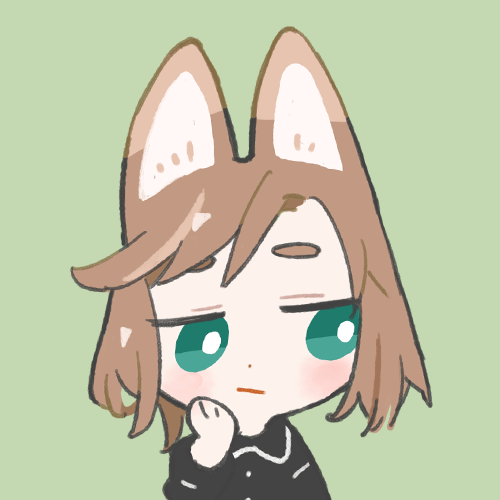

OFF

ユーホ
本業フロントエンドエンジニアの腐女子
はてなブログ
Mastodon
Twitter
ポートフォリオ
youtube
suzuri
たまにファングッズなど
booth
同人誌・フリー素材
どんな人？
乙女向けコンテンツのBLはダメなタイプ。
好きなものはプラモデルとBLとショタ。最近見て面白かったのはヴァンガードOD。ディズニー映画で育つ。
スプラトゥーンはダイナモ、モンハンは操虫棍とチャアク。FF派。
カメラ: fujifilm X70
好きなアニメ
攻殻機動隊SAC
学園黙示録HOTD
蒼き鋼のアルペジオ
グリザイアの果実
アイカツ
好きなゲーム
FF6
P3
ドラクエ8
TOA
Collar×Malice
好きな映画
ハンターキラー
羅小黒戦記
ウォームボディーズ
好きな食べ物
焼き鳥
冷めたたこ焼き
飲料全般
ご依頼について
わたしにできる範囲で、個人のお手伝いをしています。
報酬は基本的にアマゾンの欲しい物リストから何かしら送ってもらう方式ですが、現金・その他でも承っているのでご相談ください。
同人誌（小説、漫画、評論、zine、pdf）、名刺、フラワースタンドの札、招待状、WEBサイト（静的、実装含む）、フライヤーなどのデザイン経験あり。今まで制作したものは
ポートフォリオ
で確認してください。
連絡は、sitscur@gmail.comまで。
TwitterのDMでも可能です。